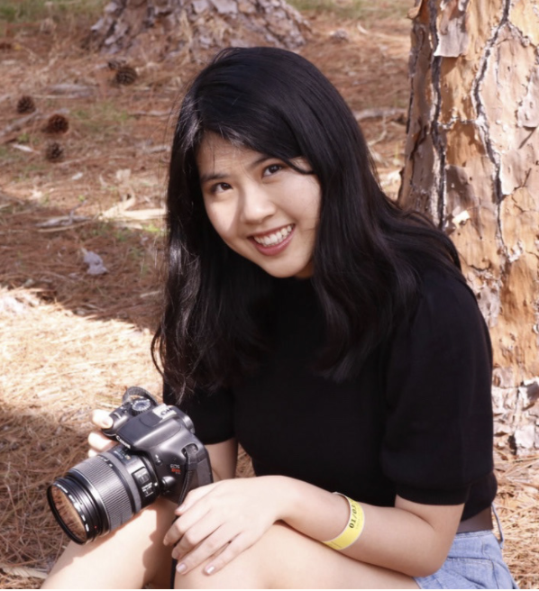

LEE LEE JIANG
ABOUT ME

Hello 👋🏼 Thanks for dropping by my portfolio! Im a second year student studying Computational Media at Georgia
Tech with concentrations in UIUX Design as well as minoring in Industrial Design. Outside of school I am
involved in Engage Ventures as a Design & Communications Intern, where I am currently working on web design and
rebranding and HackGT as a Designer, where I am working on HackGT 7 (our annual flagship hackathon!!!). I am
also a new active member of the Alpha Omega Epsilon Sorority at Georgia Tech, which promotes women in STEM and
really loving my new family.
I am always looking for opportunities to grow and expand my horizons as a designer. I am looking for experience in UI/UX
mobile and web applications. I look forward be a part of a collaborative team focused on ongoing innovation and problem
solving in UI UX/Product Design while identifying design needs and creating interactive mockups and prototypes to create
delightful, intuitive experiences. Leveraging from my design and computer science backgrounds, I will bring fresh ideas to
the table to develop the best impactful solutions to effectively analyze, design, and code challenges. I’m eager to engage
with others to make a difference in the world by thinking outside of the box with multiple angles.